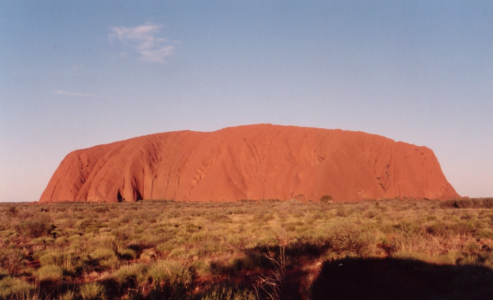

Great Barrier Reef

google images Great barrier reef ©greatbarrierreef.org
"The great barrier reef is the world's largest coral system and is composed of
over 2900 individual reefs and 900 islands stretching over 2300 kilometers" it is located east of Queensland ©source
Uluru
google images Uluru ©wikimedia commons
"Uluru is sacred to the Pitjantjatjara, the Aboriginal people of the area, known as the Aṉangu. The area around the formation is home to an abundance of springs, waterholes, rock caves, and ancient paintings. Uluru is listed as a UNESCO World Heritage Site. Uluru and Kata Tjuta, also known as the Olgas, are the two major features of the Uluṟu-Kata Tjuṯa National Park. it is located southwest of Alice springs" ©source
Shark Bay

google images Shark bay ©Beach addicted
"At the most westerly point of the Australian continent, Shark Bay, with its islands and the land surrounding it, has three exceptional natural features: its vast sea-grass beds, which are the largest (4,800 km2) and richest in the world; its dugong (‘sea cow’) population; and its stromatolites (colonies of algae which form hard, dome-shaped deposits and are among the oldest forms of life on earth). Shark Bay is also home to five species of endangered mammals."shark bay is located north of Perth on Australia's west coast©source
The Pinnacles

google images the pinnacles ©Wikimedia Commons
"The Pinnacles are amazing natural limestone structures, formed approximately 25,000 to 30,000 years ago after the sea receded and left deposits of sea shells. Over time, coastal winds removed the surrounding sand, leaving the pillars exposed to the elements. The Pinnacles range in height and dimension - some stand as high as 3.5m!" it is also located around 2 hours drive north of perth. ©source
Twelve Apostles

google images twelve apostles ©Wikimedia Commons
"Millions of years ago, the area surrounding the Great Ocean Road was covered by the ocean. The skeletons of billions of marine animals accumulated on the ocean floor and over time turned into the limestone from which the 12 Apostles are formed. When the ocean level receded, wind, water and erosion wore away weaker parts of the limestone, revealing the stacks we see standing today" it is located in the great ocean road in Victoria ©source
Mackenzie Falls

google images Mackenzie Falls ©www.visitvictoria.com
"The Mackenzie River, an inland intermittent river of the Wimmera catchment, is located in the Grampians region of the Australian state of Victoria. Rising in the Grampians National Park, on the northern slopes of the Great Dividing Range, the Mackenzie River flows generally north by west and drains into the Wimmera River, southwest of Horsham". ©source
fraser Land

google images Frased land ©Wikipedia
"Fraser Land District is a land district (cadastral division) of Western Australia partly within the Eucla and Eastern divisions of the state." it is located at the end of the great sandy straight ©source